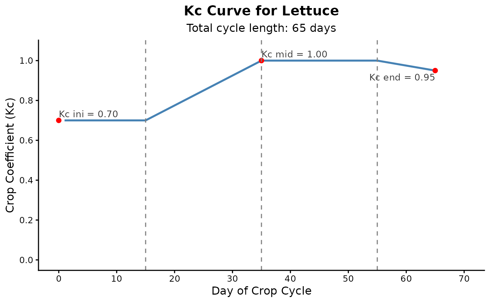

Constructs a time series of daily crop coefficient (Kc) values and generates a ggplot2
visualization representing the Kc curve over the crop cycle, following FAO-56 guidelines.
The curve is divided into four stages: initial, development, mid-season, and late-season.
Arguments
- kc_points
Numeric vector of length 3. Contains the crop coefficients for the initial stage (
Kc_ini), mid-season stage (Kc_mid), and end of the late-season stage (Kc_end).- stage_lengths
Numeric vector of length 4. The duration (in days) of each growth stage: initial, development, mid-season, and late-season.
- crop
Character (optional). Name of the crop, used to customize the plot title.
Value
A list containing:
kc_serie: A numeric vector of daily Kc values over the entire cycle.kc_plot: Aggplot2object displaying the constructed curve with key annotations.kc_data: A data frame containing the days and their corresponding Kc values.
References
Allen, R. G., Pereira, L. S., Raes, D., & Smith, M. (1998). Crop evapotranspiration - Guidelines for computing crop water requirements. FAO Irrigation and drainage paper 56.
Examples
kc_points <- kc_params_lettuce <- c(0.7, 1.0, 0.95) # Kc_ini, Kc_mid, Kc_end
stage_lengths <- stage_lengths_lettuce <- c(15, 20, 20, 10) # L_ini, L_dev, L_mid, L_late
lettuce_data <- calc_kc_curve(
kc_points = kc_params_lettuce,
stage_lengths = stage_lengths_lettuce,
crop = "Lettuce"
)
print(lettuce_data$kc_data)
#> day kc_value
#> 1 1 0.700
#> 2 2 0.700
#> 3 3 0.700
#> 4 4 0.700
#> 5 5 0.700
#> 6 6 0.700
#> 7 7 0.700
#> 8 8 0.700
#> 9 9 0.700
#> 10 10 0.700
#> 11 11 0.700
#> 12 12 0.700
#> 13 13 0.700
#> 14 14 0.700
#> 15 15 0.700
#> 16 16 0.715
#> 17 17 0.730
#> 18 18 0.745
#> 19 19 0.760
#> 20 20 0.775
#> 21 21 0.790
#> 22 22 0.805
#> 23 23 0.820
#> 24 24 0.835
#> 25 25 0.850
#> 26 26 0.865
#> 27 27 0.880
#> 28 28 0.895
#> 29 29 0.910
#> 30 30 0.925
#> 31 31 0.940
#> 32 32 0.955
#> 33 33 0.970
#> 34 34 0.985
#> 35 35 1.000
#> 36 36 1.000
#> 37 37 1.000
#> 38 38 1.000
#> 39 39 1.000
#> 40 40 1.000
#> 41 41 1.000
#> 42 42 1.000
#> 43 43 1.000
#> 44 44 1.000
#> 45 45 1.000
#> 46 46 1.000
#> 47 47 1.000
#> 48 48 1.000
#> 49 49 1.000
#> 50 50 1.000
#> 51 51 1.000
#> 52 52 1.000
#> 53 53 1.000
#> 54 54 1.000
#> 55 55 1.000
#> 56 56 0.995
#> 57 57 0.990
#> 58 58 0.985
#> 59 59 0.980
#> 60 60 0.975
#> 61 61 0.970
#> 62 62 0.965
#> 63 63 0.960
#> 64 64 0.955
#> 65 65 0.950
print(lettuce_data$kc_plot)
